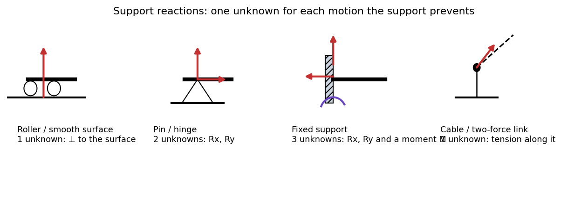

Free-Body Diagrams and Equilibrium of Rigid Bodies
Equilibrium means no net force and no net moment: and . Statics is the art of drawing one body with every force acting on it (the free-body diagram, FBD), then writing those equations. A correct FBD is 80% of every statics problem.
Equations of equilibrium
- 2-D (three equations): (any point O).
- 3-D (six equations): and .
A body is statically determinate if the unknown reactions equal the independent equations (3 in 2-D); with more unknowns it is statically indeterminate and needs deformation (see Statically Indeterminate Axial Members); with fewer it is a mechanism.
Support reactions

Figure: One reaction per motion a support prevents. Roller or smooth surface: one force the surface. Pin: two force components. Fixed support: two components and a moment. Cable or two-force link: a force along its axis (tension only for a cable).
Special members
- Two-force member (forces at two points only, no couples): the two forces are equal, opposite and along the line joining the points. Recognising one saves a whole unknown.
- Three-force member: the three lines of action are concurrent (or all parallel). Useful for finding an unknown direction.
🎯 Predict first: a uniform ladder leans against a smooth wall and rests on rough ground. How many unknown forces are on its FBD?
Three: the wall's push (horizontal only, since the wall is smooth), and at the ground a normal force and a friction force. Weight is known. Three unknowns, three equations: determinate. Draw only forces from outside the ladder.
Method (the FBD recipe)
- Isolate the body: sketch it alone, with the geometry.
- Draw every external force: loads, weight (at the centre of gravity), and a reaction for each support or contact the body had.
- Label unknowns with assumed directions; a negative answer just means the other way.
- Choose the equations cleverly: take moments about the point where most unknowns meet.
- Check: a different moment point must also sum to zero.
flowchart TD
A["isolate the body"] --> B["draw all applied loads and weight"]
B --> C["replace each support by its reactions"]
C --> D{"unknowns <= equations?"}
D -->|"yes"| E["sum moments about the best point, then forces"]
D -->|"no"| F["statically indeterminate: need deformation"]
E --> G["check with another moment point"]
Worked example
🔬 Simply supported beam, m span, kN point load m from A
: kN. : kN. Check: moments about B: ✓. The reaction nearer the load is larger, as intuition says.
⚠️ Putting internal forces on the FBD
Forces between parts inside the isolated body cancel and do not appear. If you cut through a structure, the cut forces become external to each piece.
💥 Forgetting a reaction moment at a fixed support
A cantilever's wall prevents rotation too: three unknowns, not two. Leaving out makes the problem look overdetermined and impossible.
Quick quiz
Q1. A pin-supported beam rests also on a roller. How many unknowns, and is it determinate?
unknowns, 3 equations: statically determinate (a simply supported beam).
Q2. A beam with pins at both ends: how many unknowns?
: indeterminate to the first degree (axially loads can be shared).
Connections
- Prerequisites: Force Systems and Resultants, Moments, Couples and Equivalent Force Systems
- Next: Plane Trusses - Method of Joints and Sections, Frames and Machines
- Cross-domain: Shear Force and Bending Moment Diagrams (internal forces come from cutting a beam and writing equilibrium for one piece); Hydrostatic Force on Plane Surfaces and Centre of Pressure (an equilibrium problem with a distributed load).
Self-check
Metadata
- Status: draft · Type: concept · Difficulty: beginner–intermediate
- Course map: Engineering Mechanics - MOC